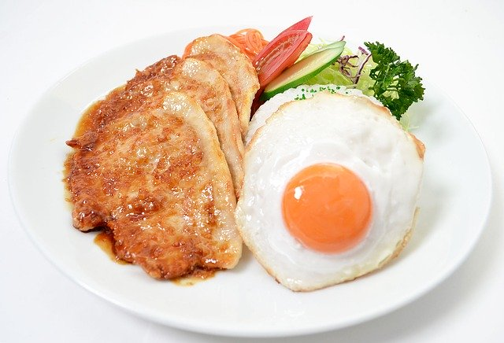

生姜焼き

材料 2人分
- 豚ロース
- 200g
- 玉ねぎ
- 1/2個
- 小麦粉
- 適量
- 生姜
- 大さじ1～2
- 醤油
- 大さじ2
- みりん
- 大さじ2
- 酒
- 大さじ2
- 砂糖
- 大さじ1/2
作り方
1
豚ロースに小麦粉をまぶします。
2
タレの材料をすべて混ぜ合わせます。
3
玉ねぎをくし切りにします。
4
油はひかずに豚ロースを両面とも焼きます。
5
肉の両面に焼き目がついたら玉ねぎを入れます。
玉ねぎに少し火が通り、透き通ってきたらタレを入れます。
6
タレが全体的に絡まったら完成です。